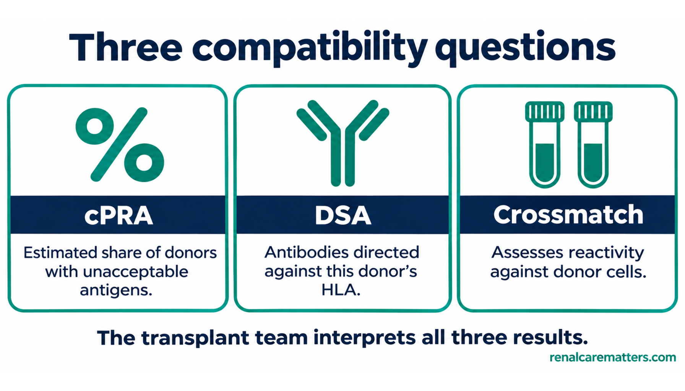

After this module you should be able to
- Explain the purpose of each evaluation domain in terms of what could make surgery or immunosuppression unsafe.
- Explain blood group (ABO) compatibility, human leukocyte antigen (HLA) typing, calculated panel-reactive antibody (cPRA), donor-specific antibodies and the crossmatch in plain language.
- Recognize sensitizing events and report them so that antibody testing stays current.
- Maintain a readiness tracker with dated results, dispositions and named owners.
- Respond to missed tests and loss of contact as barriers to solve rather than as nonadherence to punish.
Two questions every evaluation asks
Every test in a transplant evaluation answers one of two questions. Will this person survive the operation and the first year of immunosuppression? And will this person's immune system accept this particular kidney? The first question is answered by the medical work-up: heart, cancer, infection, frailty, mind and means. The second is answered by the immunology laboratory: blood group, tissue type and antibodies.
Think of the immune system as a security guard holding a list of faces it has been taught to attack. Most people's list is short. Every pregnancy, every blood transfusion and every previous transplant shows the guard new faces, and the list grows. A candidate whose list matches most of the population is "highly sensitized" and will wait far longer for a kidney that matches none of the faces. The picture has a limit. A guard forgets faces; the immune system mostly does not. The list is written in antibodies made by plasma cells and kept by memory B cells, so it can be read with a blood test, it can grow silently after a single transfusion, and an antibody that has fallen below the test's detection level can return within days when the same tissue type is met again. That memory is why every sensitizing event must be reported, even an old one.
What the medical evaluation is looking for
The Kidney Disease: Improving Global Outcomes (KDIGO) candidate guideline organizes evaluation around risks that surgery or lifelong immunosuppression would make dangerous.1 Learn the reason behind each item. It lets you explain the test to the patient, and it lets you spot what is overdue.
The guideline grades its statements, and the grade tells you how firm each one is. Screening every candidate for human immunodeficiency virus (HIV), hepatitis C and hepatitis B is a strong recommendation on high-certainty evidence (1A). Routine cancer screening as for the general population is strong but rests on very low-certainty evidence (1D). Cardiac evaluation by history, examination and electrocardiogram is ungraded, while noninvasive coronary testing for asymptomatic high-risk candidates is a weak suggestion (2C). A psychosocial assessment for every candidate is also a weak suggestion (2D). Age alone should not exclude anyone (1A).1
| Domain | The physiologic worry | Nursing focus |
|---|---|---|
| Cardiovascular | Coronary disease is common and often silent in kidney failure; surgery and fluid shifts unmask it. | Track stress test or echocardiogram dates; report new chest pain or dyspnea. |
| Cancer | Immunosuppression weakens immune surveillance, so an untreated cancer can grow faster. | Age- and sex-appropriate screening dates; report new weight loss or bleeding. |
| Infection | Latent infections (hepatitis B and C, HIV, tuberculosis, Strongyloides in endemic areas) can reactivate under immunosuppression. | Serology dates; latent tuberculosis results and treatment start; dental clearance. |
| Vascular and surgical | The kidney is joined to the iliac vessels and bladder; heavy calcification or bladder problems complicate surgery. | Imaging dates; prior abdominal surgery; urologic history. |
| Frailty and function | Low physiologic reserve predicts complications and death. | Mobility, falls, weight; refer for prehabilitation. |
| Psychosocial and means | Lifelong medicines, labs and visits require support, understanding and money. | Social work review; coverage; who will help after discharge. |
Tuberculosis deserves particular attention in the Philippines. The burden of latent infection is high, and reactivation under immunosuppression can be severe and atypical. Guidance from the American Society of Transplantation recommends screening every candidate for latent tuberculosis and treating latent infection, ideally starting before transplant.2 KDIGO recommends latent tuberculosis screening at evaluation (1C), but it wrote that recommendation for low-prevalence areas; in a high-burden country, your program's own tuberculosis policy governs.1 Track the result, the decision and the start date.
Mr. Garcia, 49, is almost through his evaluation. His interferon-gamma release assay came back positive two months ago. The tracker says "for ID referral." Nobody has booked it.
You call infectious disease, book the visit, and write the owner and date into the tracker. Six weeks later he starts treatment for latent tuberculosis. The committee lists him the following month instead of deferring him.
What this shows. A positive screen is not the end of the task. The result needs a decision, a start date and an owner.
Frailty predicts outcomes independently of age. In a prospective cohort of 537 recipients, five-year survival was 91.5 percent in nonfrail, 86.0 percent in intermediately frail and 77.5 percent in frail recipients, and frailty was independently associated with about twice the risk of death (hazard ratio 2.17, with a wide confidence interval from 1.01 to 4.65, from a single center).3 This is observational evidence, so it identifies risk rather than proving that improving frailty improves survival. It is still a reason to measure frailty and to refer for prehabilitation while the candidate waits.
Lola Pacing, 68, needs a hand to rise from the chair and walks slowly to the scale. Her daughter says, "She just needs the kidney, then she'll be strong again."
You record her chair-rise and walking speed, tell the nephrologist, and send a prehabilitation referral while she waits. You explain to the daughter that getting stronger now is part of getting ready, not a reason for delay.
What this shows. Frailty is measured, reported and worked on during the wait. It is not a judgment made at the bedside.
Vaccinate before, not after. Vaccines work better before immunosuppression, and live vaccines are generally avoided after transplant. KDIGO recommends starting inactivated vaccine series before transplant, on an accelerated schedule if needed, and completing any live attenuated vaccine series before transplant (both 1B); if a live vaccine is given, transplant should wait 4 weeks (1B).1 Transplant infectious-disease guidance agrees that both kinds can be given before transplant.4 A candidate on the active list should have an up-to-date vaccine record.
Not now, or not ever: what stops or delays a transplant
Patients and families hear evaluation results as a verdict: accepted or rejected. The reality has more shades. Most problems found during evaluation lead to a deferral (fix this, then we will look again), not a final decline. Knowing the difference lets you explain the result honestly and help the patient work on what can change.
The logic is the same as in the evaluation table above. A finding stops or delays transplant when surgery or immunosuppression would make it dangerous, or when the transplant would probably not help the person live longer or better.1 The program decides. You help the patient understand which kind of finding he has.
| Finding | Why it matters physiologically | Usual direction | What the nurse can help with |
|---|---|---|---|
| Active infection | Immunosuppression would let it spread | Defer until treated | Track treatment start and end; report fevers |
| Cancer, recent or active | Immune surveillance is weakened after transplant | Defer for a waiting period set by cancer type, or decline if active | Keep oncology records and dates in the file |
| Severe heart disease | Surgery and fluid shifts may cause infarction or heart failure | Defer for treatment, or decline if uncorrectable | Track cardiology referrals and procedures |
| Smoking | Damages vessels and wound healing; raises cancer and heart risk | Programs ask for cessation | Offer support; record a quit date |
| Excess weight | Wound complications, technical difficulty, metabolic risk | Program policy varies; often a weight goal | Refer to the dietitian and prehabilitation; record weights |
| Poor dental health | Mouth infections can seed the blood under immunosuppression | Defer until cleared | Book dental review early; it is often the last item done |
| Ongoing substance use, or repeated nonadherence | Lifelong medicines and follow-up are not yet safe | Defer with a plan and support | Explore barriers; connect to support; document progress |
| Very limited life expectancy from another illness | Risks of surgery may outweigh years gained | Decline, with a plan for other kidney failure care | Make sure dialysis or conservative care planning continues |
Several of these findings carry KDIGO grades. Active cancer excludes a candidate (1B), but a history of cancer, even metastatic, does not exclude one automatically (1D). Obesity alone should not exclude a candidate (2B), and weight-loss support should be offered (2D). Candidates should stop tobacco at least 1 month before listing (1B). An unstable psychiatric disorder or ongoing substance use disorder is a reason not to transplant now (1C), while a past history of nonadherence is not a permanent bar (1D).1
Say "not yet" when it is not yet. A patient told he has been "rejected" for transplant may stop trying. A patient told "the team wants your dental treatment done and your weight down by eight kilos, then they will review you again" has a task and a reason to do it. Use the program's exact wording, and ask the coordinator if you are unsure which it is.
Mr. Esguerra, 55, leaves the committee feedback visit and tells you in the corridor, "They rejected me. It's my weight." He is angry and close to tears.
You check the letter with him. It says "deferred," with a weight goal and a review in six months. You read it aloud slowly, show him the words "review in six months," and book him with the dietitian and the prehabilitation program before he leaves.
What this shows. "Deferred" and "declined" are different futures. Make sure the patient knows which one he has.
Blood groups, HLA, antibodies and the crossmatch
ABO blood group. The same A and B sugar antigens that decide transfusion compatibility also coat the inner lining of the kidney's blood vessels. A recipient's natural anti-A or anti-B antibodies would attack an incompatible kidney within minutes, so ABO compatibility follows transfusion rules. Some centers perform ABO-incompatible transplants after removing antibodies, a specialized protocol.
HLA typing. Human leukocyte antigens (HLA) are the proteins every cell uses to display fragments of itself to T lymphocytes. They are inherited, highly variable, and are the main targets of rejection. Typing tells the laboratory which HLA a candidate and a donor carry.
Antibodies and cPRA. Sensitizing events (pregnancy, transfusion, a prior transplant) can create antibodies against HLA the candidate does not have. The laboratory lists antigens against which the candidate has clinically significant antibodies. The calculated panel-reactive antibody (cPRA) translates that list into a percentage: the share of donors in a reference population who carry at least one of those antigens. A cPRA of 95 percent means roughly 95 of every 100 donors would be unsuitable on antibody grounds.
KDIGO recommends that antibody testing use solid-phase assays (1B). It asks, as ungraded statements, that testing be done at evaluation, at regular intervals while waiting and after every sensitizing event, and that every sensitizing event be communicated to the laboratory.1 cPRA is a measure of access, not an outcome. It predicts how long a candidate may wait and how hard a match will be; it does not by itself tell you how the kidney will do after transplant.
Donor-specific antibody (DSA). cPRA describes breadth of sensitization against a population. A DSA is an antibody directed against an HLA carried by a particular donor. A candidate with a cPRA of 20 percent can still have a strong DSA against her husband's kidney; a candidate with 90 percent may have none against a specific offer.
Crossmatch. The crossmatch tests the recipient's serum against the donor's cells (or, virtually, the antibody list against the donor's typing). A strongly positive crossmatch from preformed DSA can cause hyperacute or early antibody-mediated rejection, which is why the test must use the candidate's current serum.
Joy hangs up and turns to you. "Mrs. Cruz's cPRA is 98 percent. She asked if that means she'll never get a kidney."
Carla answers for both of you: "It means very few donors are safe for her, so her wait is longer. It does not mean none are. The lab checks every offer against her antibody list. What she can do is keep her samples current and tell us right away about any transfusion."
What this shows. Patients hear numbers as verdicts. Translate them into what they mean for the wait, and what the patient can do.

cPRA describes how many donors a candidate is sensitized against; donor-specific antibodies and the crossmatch decide whether one particular kidney is safe.
- cPRA
- Calculated panel-reactive antibody
- DSA
- Donor-specific antibody
- HLA
- Human leukocyte antigen
One transfusion can change everything
A wait-listed candidate who receives a blood transfusion during an unrelated admission may develop new HLA antibodies within weeks. If the laboratory's stored serum predates the transfusion, a future crossmatch could miss a dangerous antibody. Programs therefore ask to be notified of transfusions, pregnancies, miscarriages and infections, and they keep serum samples current on a regular schedule. KDIGO asks that all sensitizing events, including platelet transfusions and pregnancies, be communicated to the laboratory (an ungraded statement). It has no separate graded recommendation to avoid transfusion; that part is clinical judgment by the treating team.1
- Ask every listed candidate at every contact: any admission, transfusion, pregnancy or surgery since we last spoke?
- Record the date, the facility and the number of units if known, and request the records.
- Notify the coordinator and, per local procedure, the histocompatibility laboratory, and document who will arrange the repeat sample.
- Avoid unnecessary transfusion in candidates where you have influence: flag the patient's status to the treating team, who weigh anemia treatment options.
A listed candidate is admitted to the medical ward with a hemoglobin of 7.2 g/dL after a gastrointestinal bleed. The resident writes an order for two units of packed red cells.
You notice the "transplant candidate" flag and tell the resident before the blood is hung. The resident still transfuses, because the patient is dizzy and bleeding. You record the date and number of units, and you email the coordinator and the laboratory that evening so a fresh serum sample is drawn.
What this shows. Sometimes a transfusion is necessary. What makes it safe for the future is that the program knows about it.
Keeping a candidate truly ready
A candidate is "ready" only if every required item is current on the day a kidney becomes available. Results expire: a cardiac test from three years ago, an outdated serum sample, a lapsed cancer screen. A good tracker lists, for each item, the date done, the result disposition (reviewed and acceptable, needs action, pending), the expiry or repeat date, and the owner of the next step.
| Item | Date | Disposition | Repeat due | Owner |
|---|---|---|---|---|
| Serum sample for antibody screening | 12 Jan | Reviewed | Per laboratory schedule, or after any sensitizing event | Coordinator |
| Cardiac assessment | 3 Feb | Cardiology cleared | Per program policy | Nephrologist |
| Latent tuberculosis test | 20 Feb | Positive, treatment started 1 Mar | Completion date | Infectious disease |
| Cervical cancer screen | pending | Overdue | Book this month | Clinic registered nurse (RN) |
Missed tests are a signal. A candidate who misses two appointments may have run out of money for transport, lost a job, become ill, or misunderstood. Contact them through the approved route, ask what happened, document the barrier, and offer a path back: bundled visits, local testing, social work, or a benefits review. Labeling a candidate "nonadherent" without exploring the reason closes the door on people who most need help.
Mang Berto has missed two cardiology appointments. The tracker shows him in red. On the phone, he admits he lost his job as a security guard and cannot pay the tricycle and bus fare to the center.
You document the barrier and refer him to the social worker, who finds a hospital charity fund to help with his fares. You also ask the coordinator whether his echocardiogram can be done at the provincial hospital and sent. He is back on track within a month.
What this shows. "Missed appointment" is a finding to investigate, not a verdict on the patient.
Report changes that affect safety. New infection, hospitalization, a new cancer concern, major weight change, or loss of contact for weeks may require the team to place a candidate on hold. You report; the program decides the status and communicates it.
While the candidate waits: staying well and staying ready
A candidate may wait months for a living-donor work-up to finish, or years for a deceased-donor kidney. The waiting time is not empty. What happens during it decides whether the candidate is still fit, still sensitized at the same level, and still reachable when the call comes.
Why some candidates wait longer. Two things lengthen the wait, and both come from the immunology above. First, blood group. A group O candidate can receive only a group O kidney, while group O kidneys can be given to recipients of other groups. Group O candidates therefore compete for a narrower supply. Second, sensitization. A candidate with a high cPRA is compatible with only a small share of donors, so suitable offers are rare. Neither is the patient's fault, and both are worth explaining so that a long wait is not taken as neglect. KDIGO suggests telling candidates plainly how their blood group and sensitization affect their access to a kidney (2C), and recommends that highly sensitized candidates be offered access to a larger donor pool where one exists (1C).1
When the willing donor is incompatible. A relative may volunteer and then turn out to be ABO-incompatible, or to have a positive crossmatch. Some programs offer desensitization or ABO-incompatible protocols. Others use paired exchange, in which two incompatible pairs swap donors so that each recipient gets a compatible kidney. Availability depends entirely on the program. Your part is to make sure the patient hears the options from the team, not to promise any of them.
Keeping the candidate well
The readiness call. Many programs contact listed candidates on a schedule to update their status. Use the same short script every time, so nothing is skipped: any admission, transfusion, pregnancy, surgery or infection; any new diagnosis or medicine; any change in phone, address or companion; any planned travel; how dialysis is going; how the patient is feeling about the wait. Record the answers with the date, and act on any yes.
On his quarterly call, Mr. Ramos, listed for 18 months, says everything is fine. When you reach the question about travel, he mentions that he is leaving next week to work on a construction site in Saudi Arabia for a year, "to save for the transplant."
You do not tell him what to decide. You explain that if a kidney is offered while he is abroad, he will not be able to come in time, and that the program needs to know so it can discuss his listing status with him. You notify Joy that afternoon, and she arranges a call with Dr. Santos before he leaves.
What this shows. A candidate's plans are part of his readiness. The scripted question about travel caught a change that would have made him unreachable.
What is established, and what is not
- Established physiology: preformed antibodies against ABO or donor HLA can cause immediate or early antibody-mediated graft injury; this is why compatibility testing exists.
- Guideline-based: structured evaluation across cardiac, cancer, infection, frailty and psychosocial domains follows the KDIGO candidate guideline, whose grades range from 1A (viral screening, no exclusion for age alone) to ungraded (basic cardiac evaluation, antibody testing schedule).1 Pre-transplant latent tuberculosis screening and vaccination are recommended by transplant infectious-disease guidance.2,4
- Association, not proven causation: frailty predicts mortality after transplant.3 Whether prehabilitation reverses that risk is still being studied.
Case: The transfusion nobody mentioned
Thursday, 2:15 p.m., quarterly readiness call. Aling Merly, 58, has been on the deceased-donor waiting list for two years. Her cPRA was 35 percent at listing. You go down the call script with her: any admission, transfusion, pregnancy or surgery since we last spoke?
"Nothing much," she says. Then, almost in passing: "Ah, last month I was confined in the provincial hospital for heavy bleeding, the monthly kind. They gave me two bags of blood. I'm fine now."
You check her file. The program's last serum sample is from four months ago. Her tracker also shows the mammogram she was due for in March is still open. She laughs that she missed it because her son's motorcycle broke down.
Before reading on, decide what you would assess, whom you would contact and what you would say, what you would teach, and what would make you escalate. Then compare with the debrief below.
Assess
Communicate
Teach
Escalate
The nurse in the story asked three follow-up questions before ending the call: the date, the hospital and the number of units. Then she emailed the coordinator and the histocompatibility laboratory that afternoon, flagged that the stored serum predated the transfusion, and requested the provincial records. The coordinator took ownership of the repeat sample and booked it for the following week.
She also recognized that new heavy uterine bleeding in a 58-year-old is not "just bleeding". She routed it, with the overdue mammogram, to the nephrologist, who arranged a gynecologic evaluation and placed Aling Merly on temporary hold while it was done. Social work arranged a ride for the visit.
Six weeks later the evaluation was reassuring, the new sample showed one new antibody, and she was reactivated with an updated antibody list. If an offer had come in the meantime, the laboratory would have been working from the old list.
Submit: A tracker with the suspect result flagged as invalid until verified, the verification route, and separate owners for each follow-up item.
Check your understanding
Each visit draws 5 questions at random from this module’s 15-question bank, in a shuffled order. Choose the single best answer for each, then select Check answers; a rationale appears under every option. Select New set of questions for a different mix. Nothing you select is sent anywhere; scoring happens in your browser and records self-study only.
What this module builds
| Code | The learner can | Course evidence |
|---|---|---|
| K1 | Explain role boundaries, coordinate referral, and track evaluation, waitlist readiness and compatibility changes. | Referral Situation, Background, Assessment, Recommendation (SBAR), readiness tracker, offer call record |
Performance evidence for this module: Readiness tracker with dated results, dispositions and named owners.
With your preceptor
Use synthetic or de-identified examples only. These are prompts for supervised learning, not a procedure. Use your center’s own protocols, contacts and forms; your preceptor observes and signs off each item on the facility’s competency record.
- Build a readiness tracker for a synthetic candidate with at least eight dated items and owners.
- Explain cPRA, DSA and crossmatch to a peer in plain language without using the acronyms.
- Walk through your laboratory's sample-labeling and verification procedure with the histocompatibility staff.
- Practice a scripted check-in call that asks about admissions, transfusions and pregnancies.
- Review one candidate's vaccine record against the program's pre-transplant schedule.
Read next on this site
- Highly Sensitized Kidney Transplant CandidatesDeeper dive on sensitization and access for highly sensitized candidates.
- Getting Fit for a Kidney TransplantPrehabilitation for frail candidates.
- Viral Infections and Vaccinations in Kidney DiseaseVaccines and viral screening in kidney disease.
Back to the Transplant Nurse subtrack home · the Nephrology Nursing course · the entry lesson, Nephrology Nursing Module 11.